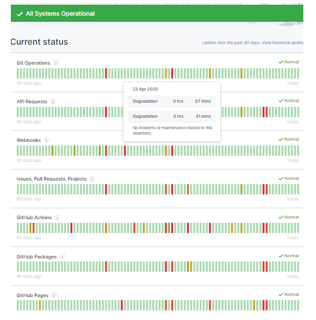

The goal with CI data is to simulataneously have detailed information on the project's
status and an overview that is appropriate for managers. The ideal capability allows
those managers to ask questions that dive deeply into that detailed data without any
additional human effort. In other words the link between the data and the report needs
to be built into the report and all of it -- the data, the overview, and the linkage --
needs to be automatically updated as part of your CI process. So what does this look like?

One example might be the github project itself. In this image, seven projects that make up the GitHub capability are displayed with their respective project health status over the last 90 days. Note the simple green-yellow-red status system that is immediately accessible visually and the relative health trends can be assessed without further explanation. In a simple example of the deep dive, by setting the mouse cursor over one of the daily color bars exposes information about the duration of the degraded status. Obviously further information could be linked in by linking to a detailed daily report.